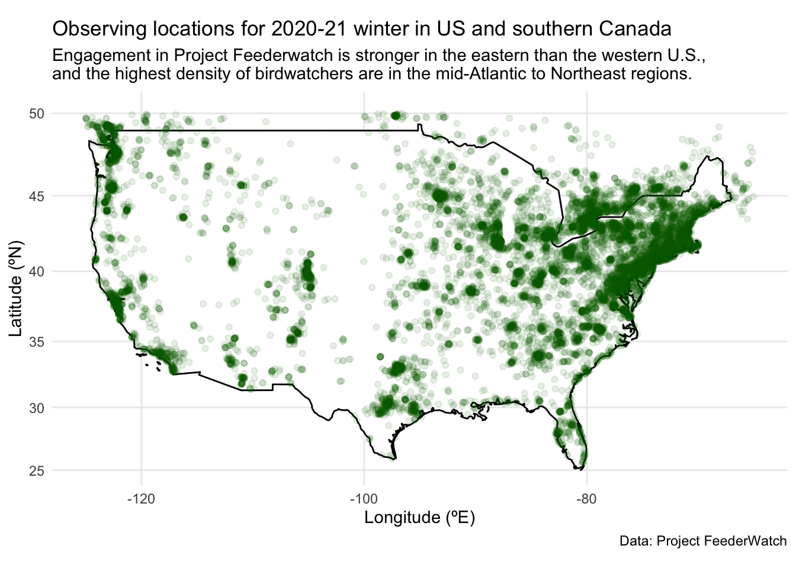
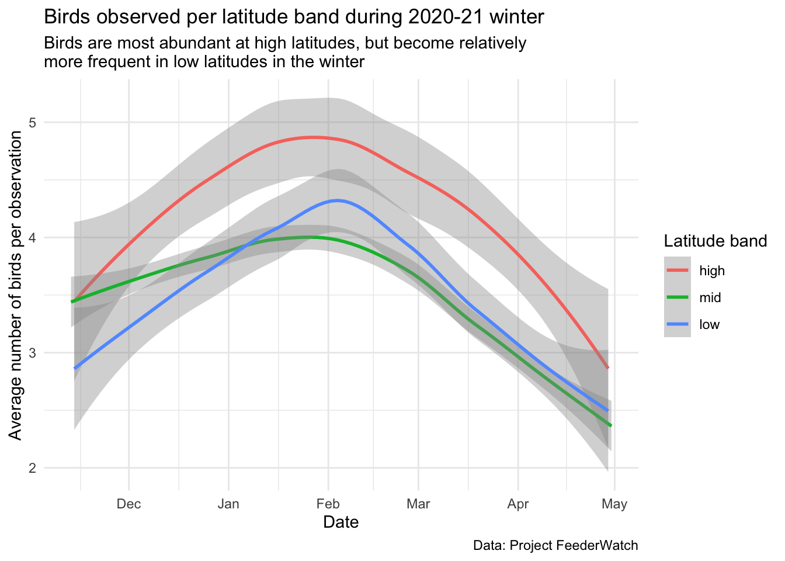
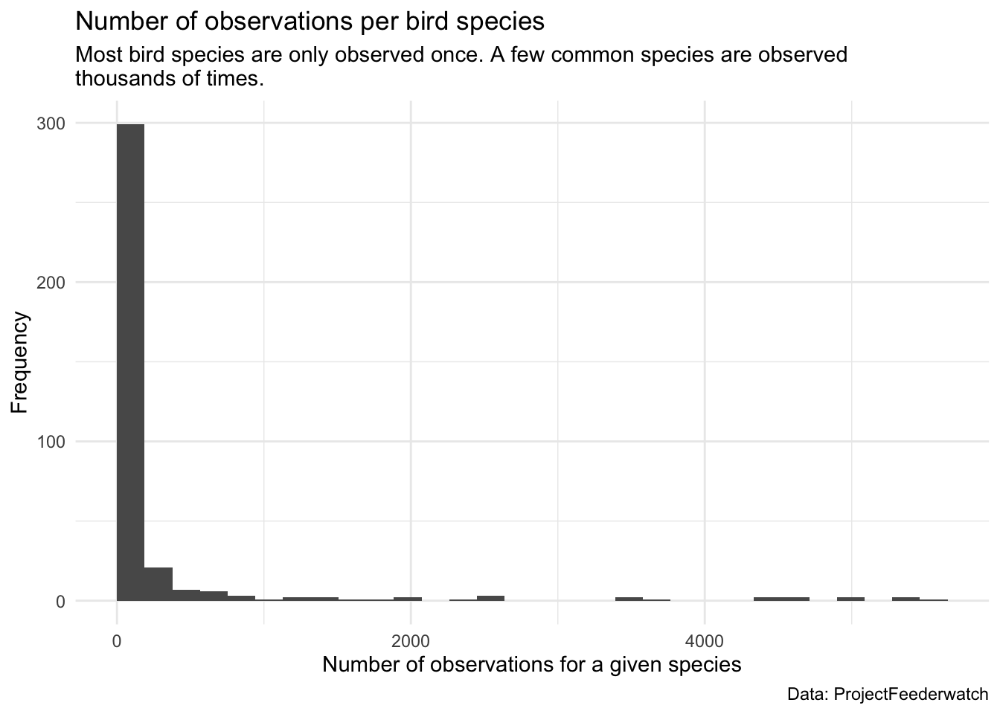
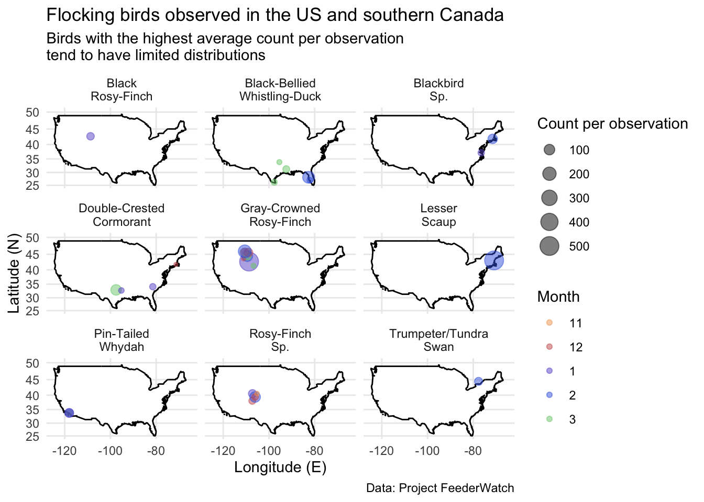

The dark-eyed junco was the most commonly observed species in Project FeederWatch in winter 2020-21. Photo credit: Bob Vuxinic, submitted to Project FeederWatch
Project aims
In this example analysis, I investigate patterns in abundance and distribution of birds in the 2020-21 winter in the United States and southern Canada. Specifically, I aim to answer the following questions:
when and where are birds observed
which species are most common, and where are they found
which species tend to occur in large flocks, and where are they found
This analysis is intended for the general public, as well as the citizen scientists (and the graders for Biostat 777).
Data from Project FeederWatch
These data were discovered via TidyTuesday for January 10, 2023, but originally come from Project FeederWatch. Project FeederWatch is a citizen science project that aims to engage individuals in North America to count birds (for as long or as little as they like) to track winter trends in bird distribution and abundance. This project has been running for more than 30 years at this point!1 The data dictionary is available here.
Show the code
# Load data and do quick exploration/clean-up# List required files to download from TidyTuesdayrds_files <-c("feederwatch.RDS","site_data.RDS")# Check if any of these files don't existif (any(!file.exists(here("data", rds_files)))) {dir.create(here("data"))# if missing, download the datafeederwatch <- readr::read_csv('https://raw.githubusercontent.com/rfordatascience/tidytuesday/master/data/2023/2023-01-10/PFW_2021_public.csv')site_data <- readr::read_csv('https://raw.githubusercontent.com/rfordatascience/tidytuesday/master/data/2023/2023-01-10/PFW_count_site_data_public_2021.csv')# save the data objects as RDS filessaveRDS(feederwatch, file =here("data","feederwatch.RDS"))saveRDS(site_data, file =here("data","site_data.RDS"))}# Load datafeederwatch <-readRDS(here("data","feederwatch.RDS"))feederwatch_og <- feederwatchsite_data <-readRDS(here("data","site_data.RDS"))site_data_og <- site_data# had to save the species_codes dictionary manually from https://docs.google.com/spreadsheets/d/1kHmx2XhA2MJtEyTNMpwqTQEnoa9M7Il2/edit#gid=2040245914species_codes_dd <-read_csv(here("data","FeederWatch_Data_Dictionary_Species_Codes.csv"),skip =1)# Quick data exploration, clean up, and creation of a few useful data frames # glimpse(feederwatch)# summary(feederwatch)#length(unique(feederwatch$species_code))# Change format for names in data dictionary:species_codes_dd$PRIMARY_COM_NAME <-str_to_title(species_codes_dd$PRIMARY_COM_NAME)# Check for outliers in spacelow_lat <-which(feederwatch$latitude<0) # length=1; this point appears to be erroneous - remove it belowhigh_lat <-which(feederwatch$latitude>50) # these are not erroneous, but want to narrow to US for plotting later on# Get rid of the one low-latitude observationfeederwatch <- feederwatch[-low_lat,]# hist(feederwatch$latitude)# Add latitudinal bands to the datafeederwatch_df <- feederwatch %>%mutate(Date =ymd(paste(Year, Month, Day, sep="-")),lat_band =case_when( latitude <35~"low", latitude >=35& latitude <45~"mid", latitude >=45~"high" )) feederwatch_df$lat_band <-factor(feederwatch_df$lat_band, levels=c("high","mid","low"))# Make useful dataframes:# Total bird count per day bird_count_per_day <- feederwatch_df %>%group_by(Date, lat_band) %>%summarize(total =sum(how_many),count =n(),std_total = total/count)# Abundant birds: birds that have highest counts in the dataset - i.e. flocking birdsabundant_birds <- feederwatch_df %>%filter(latitude<50) %>%group_by(species_code) %>%summarize(total =sum(how_many),count =n(),std_total = total/count) %>%arrange(desc(std_total)) %>%head(n=9) %>%left_join(species_codes_dd, by=join_by(species_code==SPECIES_CODE)) %>%select(species_code, PRIMARY_COM_NAME, SCI_NAME, count)# join with species info:abundant_birds_df <- feederwatch_df %>%filter(species_code %in% abundant_birds$species_code) %>%left_join(species_codes_dd, by=join_by(species_code==SPECIES_CODE)) %>%mutate(Month=factor(Month, levels=c("11","12","1","2","3","4")))# Common birds: birds that have several records in the datasetcommonly_sighted_birds <- feederwatch_df %>%group_by(species_code) %>%summarize(total =sum(how_many),count =n(),std_total = total/count) %>%arrange(desc(count)) %>%head(n=9) %>%left_join(species_codes_dd, by=join_by(species_code==SPECIES_CODE)) %>%select(species_code, PRIMARY_COM_NAME, SCI_NAME, count)# join with species info:commonly_sighted_birds_df <- feederwatch_df %>%filter(species_code %in% commonly_sighted_birds$species_code) %>%left_join(species_codes_dd, by=join_by(species_code==SPECIES_CODE)) %>%mutate(Month=factor(Month, levels=c("11","12","1","2","3","4")))
Where are birds observed?
In order to understand trends in bird distribution and abundance, we first need to know where our observations are coming from. Here is a figure showing the locations of observations. The points are transparent, so denser bird-watching areas are shaded darker green.
Show the code
# Figure 1: Map of unique sighting locations# Prep maps of America/USA for making figuresamerica_map <-map_data("world", region='USA')USA_map <-ggplot(america_map, aes(x=long, y=lat, group=group)) +geom_polygon(fill="white",color="black") +scale_x_continuous(limits =c(-125,-65)) +scale_y_continuous(limits =c(25, 50)) +coord_map() +theme_minimal()# Identify unique sighting locationsunique_sighting_locations <- feederwatch %>%group_by(loc_id) %>%summarize(n_obs =n(),latitude=mean(latitude),longitude=mean(longitude))# Plot unique sighting locationsUSA_map +geom_point(data=unique_sighting_locations, aes(x = longitude, y = latitude, group=NULL), alpha=0.1, color="darkgreen") +labs(x="Longitude (ºE)", y ="Latitude (ºN)", title ="Observing locations for 2020-21 winter in US and southern Canada",subtitle ="Engagement in Project Feederwatch is stronger in the eastern than the western U.S., \nand the highest density of birdwatchers are in the mid-Atlantic to Northeast regions.",caption ="Data: Project FeederWatch")

Figure 1: Observing locations for Project FeederWatch 2020-21 winter.
Birdwatching locations
Participants can birdwatch anywhere – it doesn’t have to be at their backyard feeder! But remember the distribution of observing locations in this figure since it will be relevant for understanding the distribution of common and flocking birds examined below.
Since most bird-watching happens in the mid-latitudes (defined here as 35-45ºN), we must standardize the number of birds by the number of observations. The following figure indicates that birds are more abundant at higher latitudes even though there are fewer total observations. However, birds become more common at lower latitudes (<35ºN) from January to March. This may be explained by migration to southern regions during the coldest months of the year. The fact that more birds are reported within every latitudinal band during the coldest months may indicate that more birds visit feeders to obtain food during the harshest conditions of the year.
Show the code
# Figure 2: Bird count per latitude bandbird_count_per_day %>%ggplot(aes(x=Date, y = std_total, color = lat_band)) +geom_smooth() +# loess-smoother is defaulttheme_minimal() +labs(y ="Average number of birds per observation", title ="Birds observed per latitude band during 2020-21 winter", color ="Latitude band", subtitle ="Birds are most abundant at high latitudes, but become relatively \nmore frequent in low latitudes in the winter", caption ="Data: Project FeederWatch")

Figure 2: Total number of birds observed within each latitudinal band (high: >=45ºN, mid: 35-45ºN, low: <35ºN).
LOESS (locally weighted running line smoother) was used on these curves. This is the default option for geom_smooth.
Let’s now explore how often different species are observed. A total of 361 unique species were reported, but most of these species were only observed once! However, the most common species were observed thousands of times! This is probably explained in part because birds are incredibly diverse,2 so some of these species may actually be rare, while others have may have limited distributions or be harder to identify.
Show the code
# Figure 3: Histogram of bird observations per speciesfeederwatch_df %>%group_by(species_code) %>%summarize(n_obs =n()) %>%ggplot() +geom_histogram(aes(n_obs), boundary=0, closed="left") +labs(x ="Number of observations for a given species", y ="Frequency", title ="Number of observations per bird species",subtitle ="Most bird species are only observed once. A few common species are observed \nthousands of times.",caption ="Data: ProjectFeederwatch") +theme_minimal()

Figure 3: Histogram of the number of observations per species.
Rare birds are becoming rarer
In 2019, the National Audubon Society estimated that two-thirds of North American birds were at risk of extinction due to climate change.3
Which birds are most common?
You’ll probably recognize the names of some of the most common birds! These birds were identified as “common” in the data set because they had the most observations (though not necessarily the highest total count of individuals).
Most commonly observed birds in the 2020-21 winter in Project FeederWatch.
Common name
Scientific name
Number of observations
Dark-Eyed Junco
Junco hyemalis
5465
Downy Woodpecker
Picoides pubescens
5449
Northern Cardinal
Cardinalis cardinalis
5438
House Finch
Haemorhous mexicanus
4955
Mourning Dove
Zenaida macroura
4938
Black-Capped Chickadee
Poecile atricapillus
4696
Blue Jay
Cyanocitta cristata
4578
American Goldfinch
Spinus tristis
4446
White-Breasted Nuthatch
Sitta carolinensis
4393
Most of the common birds were observed throughout the U.S. (or at least where people were reportedly birdwatching, see Figure 1). However, some birds had more limited distributions. For example, the blue jay and the northern cardinal were found predominantly in the eastern half of the U.S., and the black-capped chickadee was only observed in the more northern latitudes.
Show the code
# Figure 4: Commonly sighted birds# Since this figure takes a long time to render, we'll just load in the saved figure below, but this is the code that was used to generate it:common_birds_plot <- USA_map +geom_bin_2d(data = commonly_sighted_birds_df, aes(x = longitude, y = latitude, group=NULL)) +scale_fill_continuous(low="lightskyblue1", high="indianred4", name="Number of \nsightings") +theme_minimal() +labs(x="Longitude (E)", y="Latitude (N)", title="Observations of common birds in the US and southern Canada", subtitle="Common bird species are most frequently observed in the Mid-Atlantic and \nNortheast regions, likely due (in part) to a sampling bias and easy bird identification", color="Month") +facet_wrap(vars(PRIMARY_COM_NAME), labeller =labeller(PRIMARY_COM_NAME =label_wrap_gen(width =10)))#ggsave(here("figs","Commonly_sighted_birds.png"), plot=common_birds_plot, width=7, height=7, units="in")
Figure 4: Heatmap of observations for the most common birds.
Which birds are usually found in a flock?
Have you heard the saying that “birds of a feather flock together”? The birds in the figure below had the highest average abundance per observation. This indicates to me that these birds tend to appear most often in large flocks.
Show the code
# Figure 5: Most abundant birds (i.e. probably largest flocks)# focus on birds in US (or below 50oN):month_colors =c("sandybrown","indianred","slateblue3","royalblue","palegreen3")USA_map +geom_point(data = abundant_birds_df, aes(x = longitude, y = latitude, group=NULL, size=how_many, color=Month), alpha=0.5) +scale_color_manual(values=month_colors) +theme_minimal() +labs(x="Longitude (E)", y="Latitude (N)", title="Flocking birds observed in the US and southern Canada", subtitle="Birds with the highest average count per observation \ntend to have limited distributions", caption ="Data: Project FeederWatch",size="Count per observation") +facet_wrap(vars(PRIMARY_COM_NAME), labeller =labeller(PRIMARY_COM_NAME =label_wrap_gen(width =10)))

Figure 5: Month and location for bird species with the largest average count per observation. The size of the circle is relative to the flock size, and the color indicates the month when the observation was made.
Summary
In this example analysis, we explored patterns in the distribution and abundance of birds observed through the citizen science initiative Project FeederWatch conducted in winter 2020-21. We found that most of the observations for this program were made in the mid-Atlantic and northeast regions of the U.S. This pattern of observation corresponded strongly with the distribution of several of the most common birds, including the American goldfinch, dark-eyed junco, downy woodpecker, and house finch. However, flocking birds tended to have smaller ranges but a larger number of birds reported per observation. In general, birds were most abundant in the coldest months (January-March) and at the highest latitudes (>45ºN).
Bonter, D. N. & Grieg, E. I. Over 30 years of standardized bird counts at supplementary feeding stations in north america: A citizen science data report for project FeederWatch. Frontiers in Ecology and Evolution31, (2021).
2.
Wong, K. How birds evolved their incredible diversity. Scientific American (2020).
3.
Wilsey, C. et al.Survival by degrees: 389 bird species on the brink. (2019).